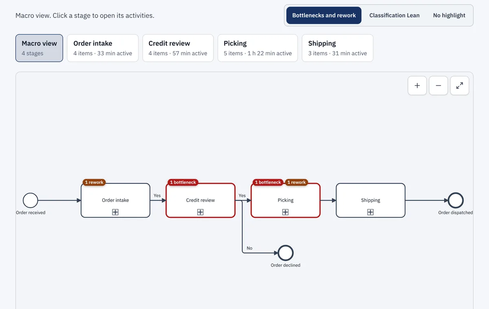
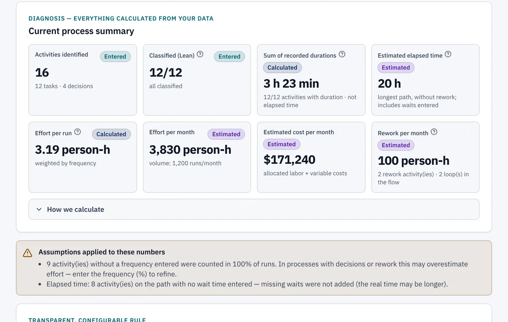
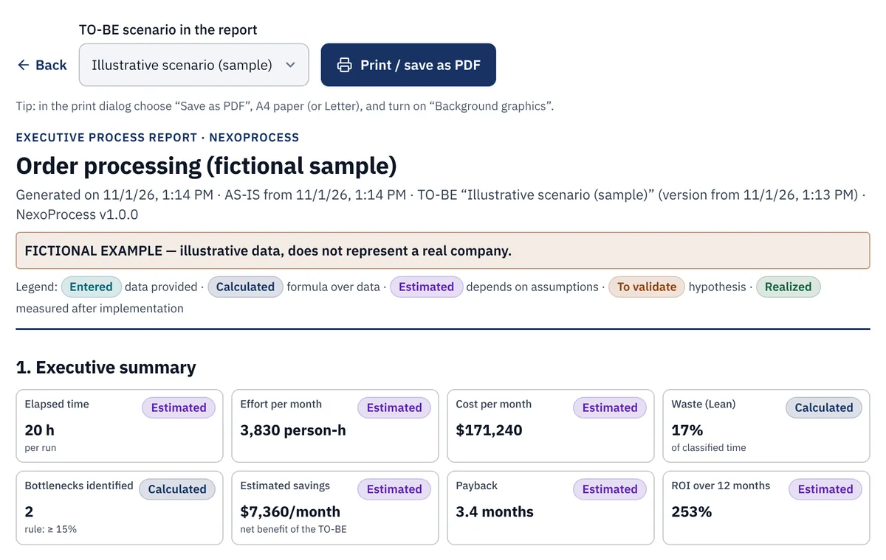

From process spreadsheet to improvement plan.
Describe a process once. NexoProcess draws the BPMN map, shows where time, effort and waiting go, and helps you plan the improvement — all in your browser, with every calculation rule and assumption in plain sight.
One payment. A license key arrives by e-mail from Gumroad. 7-day refund; see the Refund Policy.

How it works
Describe the process
Answer guided questions, or import an XLSX/CSV spreadsheet. A built-in glossary explains BPMN and Lean terms as you go.
See the map and the diagnosis
Time, effort, waiting and bottlenecks, each with its calculation rule and the assumptions behind it visible.
Plan and track the improvement
Build a TO-BE scenario, compare it with today, and turn it into an action plan and an executive report.
What is inside
BPMN 2.0 map
Decisions, rework, waiting and bottlenecks on the diagram, with a detail panel for every activity.
Lean diagnosis
Value, necessary and waste, with a Pareto of where the time concentrates.
Rule-based recommendations
No generative AI. Each recommendation shows its evidence and its assumption, and you accept, reject or investigate it.
TO-BE and business case
Conservative, base and optimistic cases. Payback and ROI are estimates, shown with their formula.
Plan, risks and simulation
Action plan, FMEA, RACI and a Monte Carlo simulation of lead time.
Executive report
A report you can print or save as PDF to take to your leadership.
Export
BPMN XML, SVG/PNG, XLSX, CSV and a JSON backup of your project.
Runs in your browser
Install it as an app (PWA). Your data stays on your device, so keep backups.
A look inside


Who it is for
- Process analysts and continuous-improvement practitioners
- Consultants who map and diagnose client processes
- PMOs and operations managers
- Owners of small businesses who want to see where time goes
Pricing
One-time payment. No subscription. Taxes may apply at checkout.
- License key sent by Gumroad after payment
- Sign in with your purchase e-mail and the key
- Fixes and improvements to v1 are included; larger future versions may have their own rules
- 7-day refund; see the Refund Policy
Questions
Does it use AI?
The recommendations come from transparent rules applied to your data, not from generative AI. Each one shows the evidence and the assumption behind it.
Where is my data?
In your browser, on your device. We do not receive your processes or spreadsheets. Clearing browser data can erase them, so use “Download backup” regularly. See the Privacy Policy.
Does it promise savings?
No. Payback and ROI are estimates calculated from the numbers you enter, with the formula and assumptions shown. Results depend on your data, and we do not guarantee any business outcome.
How do I activate it?
After buying, Gumroad e-mails you a license key. Open the app, choose “Sign in”, and enter the e-mail you bought with and the key. You need to be online the first time. After that the app works offline; connect at least once every {{LICENSE_OFFLINE_DAYS}} days to keep your license active.
Which browsers work?
Tested on current Chrome and Edge. Safari and Firefox are supported targets; tell us if anything looks wrong.
Are updates included?
Yes, fixes and improvements to v1 are included. Larger future versions may have their own rules.
What if I need a refund?
See the Refund Policy. Refunds are handled through Gumroad, and access ends at the next online license check after a refund.